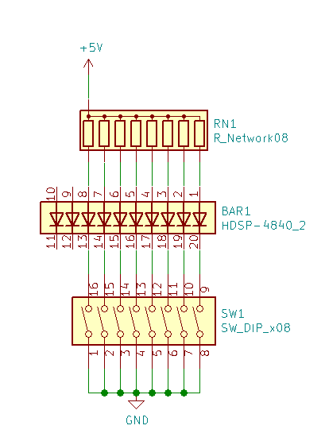
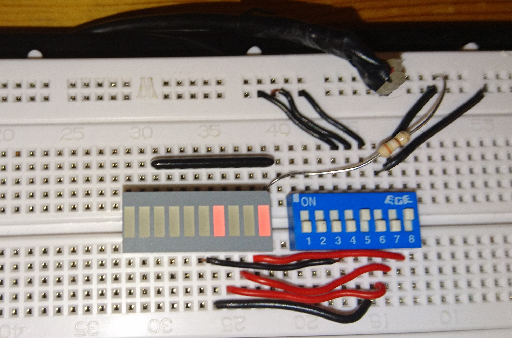
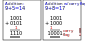
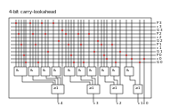
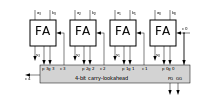

Das Binärsystem
Alle Computer, mit denen wir täglich arbeiten, wissen nichts von dem Dezimalsystem, das wir verwenden, basierend auf den zehn Ziffern, die uns zur Verfügung stehen. Alles, was sie wissen, sind die Zustände „an“ und „aus“. Wir bauen einen imaginären Schaltkreis mit einer Stromquelle, einer Kontrollleuchte – hier eine LED (Light Emitting Diode) – und einem Schalter, die Verbindung geschlossen wird, lässt das Licht blinken. Ein ausgeschaltetes Licht zählt als Null und ein eingeschaltetes Licht zählt als Eins. So einfach ist das. Wir schalten das Licht ein und erhalten eine Eins.

Jetzt erweitern wir diese Installation um eine zweite Lampe und schalten auf die aktuelle Lampe links um. Wir schalten die linke Lampe ein und die rechte ein. Als Ergebnis erhalten wir eine „2“. Wenn wir die rechte Lampe wieder einschalten, erhalten wir eine 3. Wie in unserem Dezimalsystem ist die Wertigkeit der linken Lampe höher (zumindest in unserem Beispiel), nur der Faktor unterscheidet sich, statt 10 ist der Faktor 2. Wir bezeichnen die Wertigkeit mit 2^n, wobei n die Position der Lampe ist. Jeder Schalter ist ein Bit – genauer gesagt ist der Schalter der Eingang und die LED der Ausgang. Mit vier Schaltern – einem halben Byte, auch Nibble genannt – können wir also von 0 bis 15 zählen, während wir mit acht Schaltern – einem Byte – von 0 bis 255 zählen können. Dieses Schema kann nach Bedarf erweitert werden.
Binär |
Hex |
ohne Vorzeichen Interpretation |
0000 |
00 |
0 |
0001 |
01 |
1 |
0010 |
02 |
2 |
0011 |
03 |
3 |
0100 |
04 |
4 |
0101 |
05 |
5 |
0110 |
06 |
6 |
0111 |
07 |
7 |
1000 |
08 |
8 |
1001 |
09 |
9 |
1010 |
0A |
10 |
1011 |
0B |
11 |
1100 |
0C |
12 |
1101 |
0D |
13 |
1110 |
0E |
14 |
1111 |
0F |
15 |

Ein einfacher Ripple-Carry-Addierer
Lassen Sie uns einige einfache Berechnungen durchführen, um die notwendige Logik für eine Addierereinheit abzuleiten. Die Addition erfolgt wie in der Grundschule gelernt, nur dass wir diesmal Binärzahlen addieren. Das erste Beispiel funktioniert, während das zweite Beispiel neben dem (falschen) Ergebnis ein Übertrag-Flag erzeugt.

Schema für kombinatorische Schaltkreise
Wir entwickeln den RC-Addierer-Schaltkreis nach folgendem Schema, das zur Bewertung kombinatorischer Schaltkreise angewendet wird.
Eingänge und Ausgänge definieren . Wahrheitstabelle erstellen . Boolesche Gleichungen auswerten/vereinfachen . Optimierten kombinatorischen Schaltkreis zeichnen
Wahrheitstabelle für Volladdiererzelle |
Volladdiererzelle |
|
[width=„100%“,cols=„3,3,3,0,3,3“,options=„header“] !=== ! c_in ! A ! B !! c_out ! sum ! 0 ! 0 ! 0 !! 0 ! 0 ! 0 ! 0 ! 1 !! 0 ! 1 ! 0 ! 1 ! 0 !! 0 ! 1 ! 0 ! 1 ! 1 !! 1 ! 0 ! 1 ! 0 ! 0 !! 0 ! 1 ! 1 ! 0 ! 1 !! 1 ! 0 ! 1 ! 1 ! 0 !! 1 ! 0 ! 1 ! 1 ! 1 !! 1 ! 1 !=== |
\[ \begin{aligned} s & = (\overline{c_{in}} \land \overline{A} \land B) \lor (\overline{c_{in}} \land A \land {\overline{B}}) \lor (c_{in} \land \overline{A} \land \overline{B}) \lor (c_{in} \land A \land B) \\ & = \overline{c_{in}}(\overline{A} \land \overline{B}) \lor (A \land \overline{B}) \lor c_{in}\overline{A} \land \overline{B}) \lor (A \land B \\ & = \overline{c_{in}}(A \oplus B) \lor c_{in}(\overline{A \oplus B}) \\ & = A \oplus B \oplus c_{in} \end{aligned} \]
\[ \begin{aligned} c_{out} & = \overline{c_{in}}(A \land B) \lor c_{in}(\overline{A} \land B) \lor c_{in}(A \land \overline{B}) \lor c_{in}(A \land B) \\ & = \overline{c_{in}}(\overline{A} \land \overline{B}) \lor (A \land \overline{B}) \lor c_{in}\overline{A} \land \overline{B}) \lor (A \land B \\ & = \overline{c_{in}}(A \land B) \lor c_{in}[(\overline{A} \land B) \lor (A\land \overline{B}) \lor A \land B] \\ & = \overline{c_{in}}AB \lor c_{in}(A \oplus B) \lor c_{in}AB \\ & = (\overline{c_{in}} \lor c_{in})AB \lor c_{in}(A\oplus B) \\ & = AB \lor c_{in}A \oplus B \end{aligned} \]
Ein einfacherer Ansatz
Anstelle der Schaltung einer Volladdierer-Zelle, bei der nur die beiden Eingangssignale ohne den Übertrag berücksichtigt werden, bewerten wir die Halbaddierer-Zelle.
A |
B |
c_out |
sum |
|
0 |
0 |
0 |
0 |
|
0 |
1 |
0 |
1 |
|
1 |
0 |
0 |
1 |
|
1 |
1 |
1 |
0 |
Wie wir sehen können, besteht der Halbaddierer nur aus den beiden Gattern 'AND' und 'XOR'. Zwei Halbaddierer und ein separates 'OR'-Gatter für das Übertragssignal ergeben einen Volladdierer.
\[ \begin{array}{c} c = x \land y \\ s = x \oplus y \end{array} \]
Carry-Lookahead-Addierer
Um die lange Verzögerung des Carry-Signals im RC-Addierer zu vermeiden, wurde der Carry-Lookahead entwickelt. Die Signale (g)enerate und (p)ropagate sind wie folgt definiert (wobei i der Index der Signifikanz ist):
\[ \begin{array}{c} g_{i} = a_{i} \land b_{i} \\ p_{i} = a_{i} \lor b_{i} \end{array} \]
Aus diesen Hilfssignalen wird der nächste Übertrag berechnet:
\[ c_{i+1} = g_{i} \lor c_{i} \land p_{i} \]
\[ \begin{aligned} c_{1} & = g_{0} \lor c_{0}p_{0} \\ c_{2} & = g_{1} \lor (g_{0} \lor c_{0}p_{0})p_{1} = g_{1} \lor g_{0}p_{1} \lor c_{0}p_{0})p_{1} \\ c_{3} & = g_{2} \lor c_{2}p_{2} = g_{2} \lor (g_{1} \lor g_{0}p_{1} \lor c_{0}p_{0}p_{1})p_{2} \\ & = g_{2} \lor g_{1}p_{2} \lor g_{0}p_{1}p_{2} \lor c_{0}p_{0}p_{1}p_{2} \\ c_{4} & = g_{3} \lor c_{3}p_{3} = g_{3} \lor (g_{2} \lor g_{1}p_{2} \lor g_{0}p_{1}p_{2} \lor c_{0}p_{0}p_{1}p_{2})p_{3} \\ & = g_{3} \lor g_{2}p_{3} \lor g_{1}p_{2}p_{3} \lor g_{0}p_{1}p_{2}p_{3} \lor c_{0}p_{0}p_{1}p_{2}p_{3} \\ \end{aligned} \]
Carry-Lookahead-Addierer-Schaltung

Wie man sieht, steigt die Komplexität der Schaltung mit der Signifikanz. Die folgende Tabelle zeigt die Gesamtansicht dieser verschiedenen Addierer-Implementierungen. Natürlich ist das Thema Addierer viel umfassender als hier dargestellt, wir haben nur die Konzepte vorgestellt.
Ripple-Carry-Addierer
iamge:../images/how_does_cpu/fulladder_array.svg[width=„120%“]
Carry-Lookahead Adder

Im nächsten Blogbeitrag werden wir sehen, wie man den Zahlenbereich auf den negativen Bereich ausdehnt.